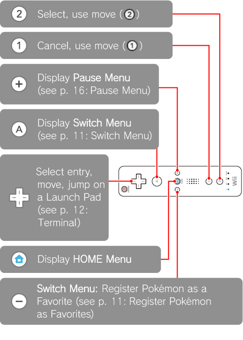
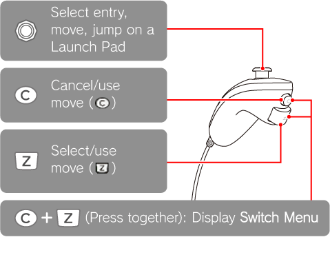
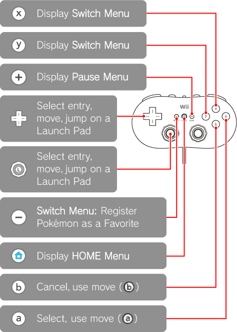
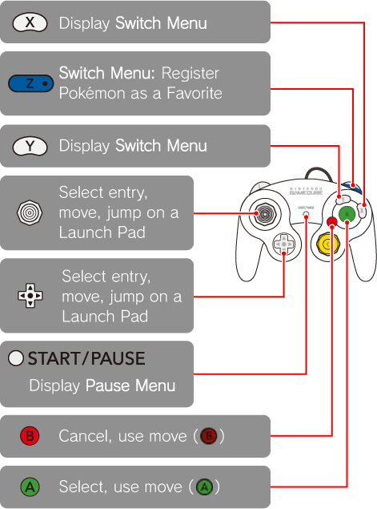

7 |
How to Use the Controller |
 |
|
This game can be played by 1–4 players simultaneously. In addition to the Wii Remote, the Classic Controller, the Nunchuk, and Nintendo GameCube Controller can also be used. However, this manual will focus on the controls available using the Wii Remote. Note: For more information on using controllers other than the Wii Remote when playing solo, please refer to p. 18: Playing Solo Using a Controller Other Than a Wii Remote. When playing in single-player mode, the Nunchuk cannot be used.
Wii Remote Please hold the Wii Remote horizontally. 
Other Controllers If you are using a Nunchuk or Classic Controller, connect it to the Wii Remote. If you are using a Nintendo GameCube Controller, connect it to the Wii console. Then proceed to MULTIPLAYER Settings (see p. 18: Beginning Co-op Play).
In this game, if you only have one Wii Remote and you connect a Nunchuk or a Classic Controller, it is possible to play 2-player, with one player using the Wii Remote and the other using the Nunchuk or the Classic Controller.
During the game, be careful not to pull on the Nunchuk and the Wii Remote too much. They can become unplugged and cause accidents, injuries, or damage to household goods.
Nunchuk When playing solo, the Nunchuk cannot be used. In Co-op Play, please plug the Nunchuk into the Wii Remote beforehand. The Pause Menu cannot be displayed and Pokémon cannot be registered as favourites using the Nunchuk.  Classic Controller 
Nintendo GameCube Controller  |
 |
 |
 |